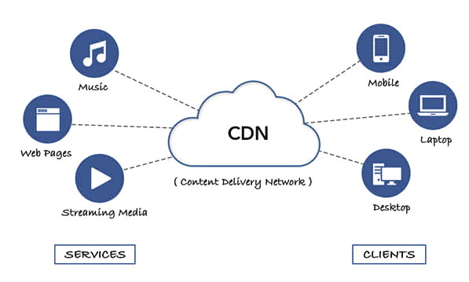

HTML
El Lenguaje de Marcado de Hipertexto (HTML) es el código que se utiliza para estructurar y desplegar una página web y sus contenidos. Por ejemplo, sus contenidos podrían ser párrafos, una lista con viñetas, o imágenes y tablas de datos

El Lenguaje de Marcado de Hipertexto (HTML) es el código que se utiliza para estructurar y desplegar una página web y sus contenidos. Por ejemplo, sus contenidos podrían ser párrafos, una lista con viñetas, o imágenes y tablas de datos
La definición de TCP/IP es la identificación del grupo de protocolos de red que hacen posible la transferencia de datos en redes, entre equipos informáticos e internet.
el directorio telefónico de Internet. Las personas acceden a la información en línea a través de nombres de dominio como nytimes.com o espn.com. Los navegadores web interactúan mediante direcciones de Protocolo de Internet (IP).

Una CDN es un conjunto de servidores ubicados en diferentes puntos de una red que contienen copias locales de ciertos contenidos que están almacenados en otros servidores generalmente alejados geográficamente, de forma que sea posible servir dichos contenidos de manera más eficiente.
En informática, la World Wide Web o red informática mundial es un sistema que funciona a través de Internet, por el cual se pueden transmitir diversos tipos de datos a través del Protocolo de Transferencia de Hipertextos o HTTP, que son los enlaces de la página web.

Los servidores de FTP son aplicaciones de software que posibilitan la transferencia de archivos de un dispositivo (es decir, una computadora con Mac, Windows o Linux) a otro. Realizan dos simples tareas: “obtener” y “poner”. Puedes “obtener” archivos del servidor del FTP o “poner” archivos en el servidor del FTP.
HTTP, de sus siglas en inglés: "Hypertext Transfer Protocol", es el nombre de un protocolo el cual nos permite realizar una petición de datos y recursos, como pueden ser documentos HTML.